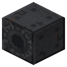
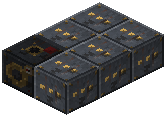
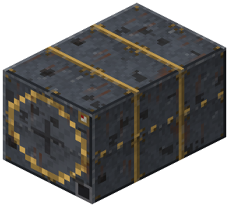
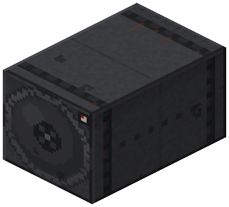

Паровой автоклав


Под давлением пара: 2 латекса + сера → 4 резины (с 25 mB формалина в баке — 5 и вдвое быстрее); масло 500 mB + сера → 1 резина (фактис); 3 деревянных полублока + 250 mB креозота (или 100 mB фенола) → 2 шпалы; 3 нити → 4 стерильных бинта.
Сосуд (A24): машина — узел лежачего сосуда 2x2x3. Ставь узел лицом к себе — это левый нижний блок торца; ещё 11 корпуса автоклава (4 из 8 железных пластин + молот) — на 1 вправо, на 1 вверх и на 3 вглубь. Без сосуда узел стоит (Waila: «сосуд не собран»), ничего не тратит. Собранный гонит до 4 рецептов разом — сколько хватает сырья, катализатора и места на выходе: пар и выход ×4, время то же. Трубы и воронки — к торцам (любой из 8 блоков переднего или заднего торца), только через торцевую грань; бока и крыша глухие. Клик по корпусу — как по узлу. Порядок постановки любой.
Стеновые блоки (A30, docs/masonry.md): песок в слот сырья, негашёная известь — в слот серы. 8 песка + 1 известь + 250 пара -> 8 силикатного кирпича за 20 с — кирпич без глины. Положил ещё слиток алюминия — машина делает газосиликат: 8 песка + 2 извести + 1 алюминий -> 24 блока. Газосиликат в три раза дешевле на блок, но мягче и слабее против взрыва; на стены форта и под артиллерию — силикатный.
Ускоритель (1.57.18): 25 mB формалина в баке — вулканизация даёт 5 резины вместо 4 и вдвое быстрее. Пока в баке формалин, фактис (масло) не идёт — одна жидкость за раз.
Шпалы (1.57.13): 3 деревянных полублока + 250 креозота ИЛИ 100 фенола -> 2 шпалы. Фенол (карболка) сильнее — жидкости в 2,5 раза меньше; заливай одну жидкость за раз.
Параметры
| Эпоха | 2 — Пар и механика |
|---|---|
| Многоблок | нет |
| Привод | пар |
| Баки, mB | 8000, 8000 |
| что делает | вулканизация, фактис, пропитка шпал, стерилизация, силикатный кирпич и газосиликат (A30) |
| энергия на входе | пар |
| из чего | клапан железного бака RC, твёрдая топка RC, железная дверь; + 11 корпусов автоклава (сосуд 2x2x3, A24) |
Кто кормит
- IC2:itemHarz ← Химический реактор, Реактор высокого давления
- dustSulfur ← Химический реактор, Реактор высокого давления
- creosote ← Коксовая камера, Пиролизная печь
- Формальдегид (формалин) ← Химический реактор, Реактор высокого давления
- Фенол (карболовая кислота) ← Химический реактор, Реактор высокого давления
- steam ← Парогенератор АЭС
- Скипидар ← Химический реактор, Реактор высокого давления
Кого кормит
- машины Zavod её продукт не едят
Как устроено (из кода)
Паровой автоклав: работа под давлением пара. Единственное место вулканизации в сборке. вулканизация: 2 латекса + сера + 250 пара -> 4 резины 10 с + 25 формалина в баке (уротропин - ускоритель, 1910-е) -> 5 резины за 5 с (1.57.18) фактис: 500 растительного масла + сера + 100 пара -> 1 резина 10 с пропитка шпал: 3 деревянных полублока + 250 креозота + 250 пара (Бетелл, 1838) -> 2 шпалы 10 с стерилизация: 3 нити + 250 пара -> 4 стерильных бинта 5 с силикатный кирпич: 8 песка + 1 негашёная известь + 250 пара (Михаэлис, 1880) -> 8 блоков 20 с (A30) газосиликат: 8 песка + 2 извести + 1 слиток алюминия + 250 пара (Ytong, 1920-е) -> 24 блока 20 с парусина: 2 тканого хлопка + 100 масла + 100 пара (промасленная, клеёнка) -> 2 парусины 10 с (1.57.39) 2 шерсти + 1 воск (слот серы) + 100 скипидара + 100 пара (вощёная) -> 2 парусины 10 с (была у плотника Forestry - автоклав у игрока раньше плотника) Слоты: 0 сырьё (песок), 1 добавка (сера или известь), 2 выход, 3 алюминий. Баки: 0 пар, 1 жидкость (креозот, фенол, масло, формалин, скипидар); шпалы на феноле - 100 вместо 250 (1.57.13). A24 (1.56.100): узел лежачего сосуда 2x2x3 (Vessel) - без сосуда стоит; сосуд гонит до 4 партий разом.
Сборка
Без сосуда узел стоит. Собранный гонит до 4 рецептов разом: пар и выход xN, время то же.

Узел — автоклав: ставь лицом к себе. Это левый нижний блок торца.

Нижний ряд корпусов: на 1 вправо и на 3 вглубь (5 блоков).

Верхний ряд — ещё 6 корпусов. Сосуд 2x2x3 собран: торец оживает. Трубы и воронки — к торцам, бока и крыша глухие.


Бледное — поставлено на прошлых шагах.